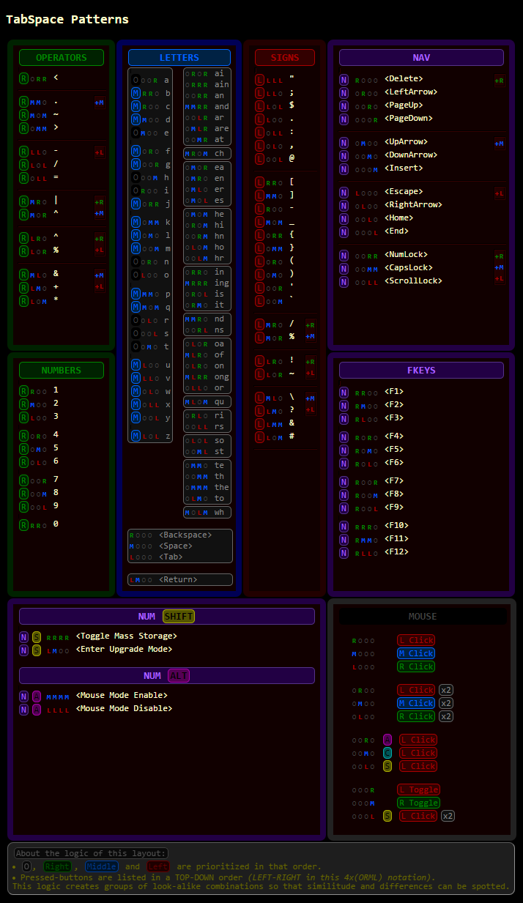
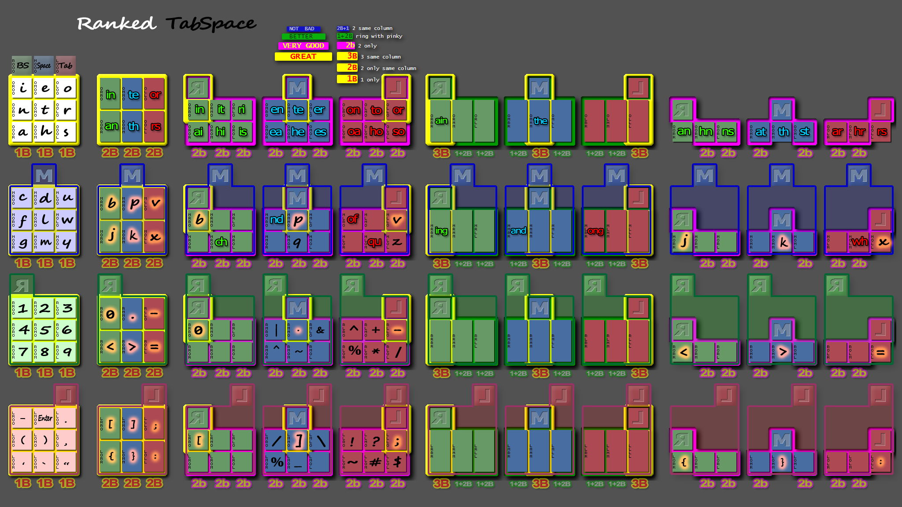
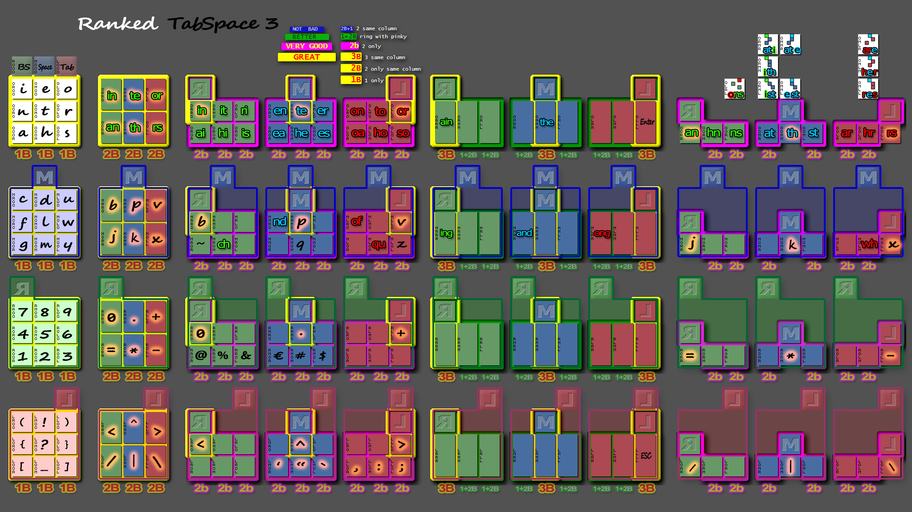

Twiddler3-layout
Twiddler 3 - TabSpace Customization

Looking into a chorded-keyboard layout standard

TabSpace Guide…
by Brandon Craig Rhodes stands for the Twiddler standard layout dated 1999,
this is a thorough description of a complementary survey.
…and here are some useful links…
Supported chords… are stored using an ORML encoding1 the user can customize with TekGear's Twiddler 3 Tuner2 online application working on the 4x4 chord sets3 we can brake down into four more convenient 3x3 chord sets4.
Making rules… involves sketching out some mapping technique by following a Rulling road map1. spelling out our objectives and how we are going to get there. Gathering facts should bring enough material to craft an initial set of Work rules2 for a first layout build.
Some rules… reflecting our mapping strategy will take advantage of a graphical representation based on Fingers agility1, Rows2, Columns3, Pads4 and some other kind of Clusters5 .
Applying rules… while assembling functionally related groups like Numbers and Operators1 or Trade signs2 and visually related ones like Signs3, Quote & Punctuation4 should give us the best possible mnemonics-friendly layout, provided good enough rules have been crafted along the way.
Multi Character Chords (MCC)…
goes one step beyond simple one–to–one chord–to–character mappings,
If
TabSpace MCC1
defines a number of static bindings,
we can look for
More MCC2
based on recent studies
a further step could use something like
AutoHotkey to handle dynamic
hotstrings4.
to handle dynamic
hotstrings4.
Cheat Sheets… should make enough sense to account for the usefulness of this study.
Contributions are welcome…
Obviously, the best way to assimilate a complex organization is by being involved in the build process. If it's too late for that, reading a transcript of the survey it took to make it is the next best thing.
To better understand where the results come from, this survey must be seen as a decision making report, stating the rationale used to make a choice among alternate mappings — at every single step, down to the level of each button.
GraphicsMost of the time, much has to be said to convey all that matters when deciding what is best.
As doing that with words only is likely to get boring real quick, extensive use of graphics will save as much wording as possible.
A good way to keep an eye on the big picture can be arranged by making sure that every single image is a part of the final representation in The Layout Browser.
The tracking processAfter this TabSpace section, we will take care to state one step at a time what we have and what is missing in order to associate all our symbols with the most appropriate chord.
Brandon Craig Rhodes http://www.rhodesmill.org/brandon
Version 0.3, Monday 15 November 1999
May be shared and modified if credited
The TabSpace Twiddler Key Assignments (PNG)
...
original PDF document
# The three top buttons map to the most frequently used keys. Note
# that in sane command line environments (those that support
# completions), tab is used nearly as much as backspace and both are
# often used many times per line (so we make them more convenient than
# a carriage return).
0 r000 = BACKSPACE
0 m000 = " "
0 l000 = TAB
# Next are the nine most common letters, which can each be produced
# with a single keypress. They are carefully arranged so that the
# most common combinations of them can be pressed simultaneously to
# produce double letters. In each case the double letter combinations
# output their two constituent letters in the most common order
# (though with some such as er-re it was a close call). The doubles
# can be expected to account for roughly one-third of the adjacent
# letter pairs in normal English text!
0 0m00 = "e"
0 00m0 = "t"
0 000m = "h"
0 0l00 = "o"
0 00l0 = "r"
0 000l = "s"
0 0r00 = "i"
0 00r0 = "n"
0 000r = "a"
0 0r0r = "ai"
0 0r0m = "hi"
0 0r0l = "is"
0 0rr0 = "in"
0 0rm0 = "it"
0 0rl0 = "ri"
0 0m0r = "ea"
0 0m0m = "he"
0 0m0l = "es"
0 0mr0 = "en"
0 0mm0 = "te"
0 0ml0 = "er"
0 0l0r = "oa"
0 0l0m = "ho"
0 0l0l = "so"
0 0lr0 = "on"
0 0lm0 = "to"
0 0ll0 = "or"
0 00rr = "an"
0 00rm = "hn"
0 00rl = "ns"
0 00mr = "at"
0 00mm = "th"
0 00ml = "st"
0 00lr = "ar"
0 00lm = "hr"
0 00ll = "rs"
# Every other letter is produced by pressing the top middle button
# (the spacebar) and some combination of the lower keys. It is
# expected that during normal typing the index will stay on the
# spacebar. A few combinations that involve these second-tier letters
# are also supported.
0 mm00 = "d"
0 m0m0 = "l"
0 m00m = "m"
0 mr00 = "c"
0 m0r0 = "f"
0 m00r = "g"
0 ml00 = "u"
0 m0l0 = "w"
0 m00l = "y"
0 mmm0 = "p"
0 m0mm = "k"
0 mrr0 = "b"
0 m0rr = "j"
0 mll0 = "v"
0 m0ll = "x"
0 mm0m = "q"
0 ml0l = "z"
0 mlr0 = "of"
0 mmr0 = "nd"
0 mr0m = "ch"
0 ml0m = "qu"
0 m0lm = "wh"
# Finally, we support some three-letter combinations. As above, note
# that they are produced simply by pressing all of their letters
# simulateously.
0 0mmm = "the"
0 0rrr = "ain"
0 0mlr = "are"
0 mrrr = "ing"
0 mmrr = "and"
0 mlrr = "ong"
# As everyone knows, keypads are supposed to be three by three.
0 rr00 = "1"
0 rm00 = "2"
0 rl00 = "3"
0 r0r0 = "4"
0 r0m0 = "5"
0 r0l0 = "6"
0 r00r = "7"
0 r00m = "8"
0 r00l = "9"
0 rrr0 = "0"
0 rmm0 = "."
0 rll0 = "-"
# Below the number keypad we place three tiers of mathematical
# operators and symbols. First come the arithmetic operators, which
# we cascade off of the minus sign.
0 rlm0 = "+"
0 rlr0 = "^"
0 rl0l = "/"
0 rl0m = "*"
0 rl0r = "%"
# The middle tier of operators include those usually used for logic
# operations.
0 rmr0 = "&"
0 rml0 = "|"
0 rm0m = "~"
0 rm0r = "^"
# The double key combinations along the bottom two rows
# produce the comparitive operators. Note that the greater than and
# less than symbols, which we also use as angle brackets, are in
# positions similar to all other brackets (see below).
0 r0rr = "<"
0 r0mm = ">"
0 r0ll = "="
# The last major section involves punctuation. The period, comma, and
# enter key are both intended to be very easy to press. The semicolon
# is of course produced by pressing period and comma simultaneously.
# Quotes and brackets are also available here.
0 ll00 = "."
0 lll0 = ";"
0 l0l0 = ","
0 l0ll = ":"
0 l00l = 34 # quotation mark
0 l00m = "'"
0 l00r = "`"
0 lm00 = ENTER
0 lr00 = "-"
0 lrr0 = "["
0 lmm0 = "]"
0 l0r0 = "("
0 l0m0 = ")"
0 l0rr = "{"
0 l0mm = "}"
# Now that we have exhausted the same-row combinations of the lower
# three keys, we place two more echelons of symbols: one of textual
# punctuation, and the other of more obscure symbols more often
# encountered in programming (and computer typesetting). People who
# use such keys exceedingly often may have cause to be upset with me.
0 llm0 = "?"
0 llr0 = "!"
0 ll0l = "$"
0 ll0m = "#"
0 ll0r = "~"
0 llll = "@"
0 llmm = "&"
0 lmr0 = "/"
0 lml0 = "\\"
0 lm0m = "_"
0 lm0r = "%"
# The FN modifier has no useful native function under X-windows
# (unlike the Shift, CTRL, and ALT modifiers), so we use it for useful
# keystrokes that need to be easy to get to. Hitting single keys with
# FUNC give an arrow key rose and other screen navigation sequences.
# This is also where we put important codes like Escape, Delete, Null,
# and Linefeed.
func r000 = 127 # func + BACKSPACE = delete (ascii rubout)
func m000 = NULL # func + SPACE = null
func l000 = ESCAPE # func + TAB = ESCAPE
func lm00 = 10 # func + ENTER = linefeed
func 0m00 = 20,"FF52",20 # XK_Up
func 00m0 = 20,"FF54",20 # XK_Down
func 0r00 = 20,"FF51",20 # XK_Left
func 0l00 = 20,"FF53",20 # XK_Right
func 00r0 = 20,"FF55",20 # XK_Page_Up
func 000r = 20,"FF56",20 # XK_Page_Down
func 00l0 = 20,"FF95",20 # XK_Home
func 000l = 20,"FF9C",20 # XK_End
func 000m = 20,"FF9E",20 # XK_Insert
# Every Emacs user will appreciate these easily accessible sequences,
# if only they can bring themselves to remember them.
func ll00 = 4 # C-d
func mm00 = 7 # C-g
func 0rr0 = 3 # C-c
func 0mm0 = 24 # C-x
func 0ll0 = 24,"u" # C-x u
func 00rr = 24,"(" # C-x (
func 00mm = 24,")" # C-x )
func 00ll = 24,"e" # C-x e
# FUNC + keypad produces function keys.
func rr00 = 20,"FFBE",20 # XK_F1
func rm00 = 20,"FFBF",20 # XK_F2
func rl00 = 20,"FFC0",20 # XK_F3
func r0r0 = 20,"FFC1",20 # XK_F4
func r0m0 = 20,"FFC2",20 # XK_F5
func r0l0 = 20,"FFC3",20 # XK_F6
func r00r = 20,"FFC4",20 # XK_F7
func r00m = 20,"FFC5",20 # XK_F8
func r00l = 20,"FFC6",20 # XK_F9
func rrr0 = 20,"FFC7",20 # XK_F10
func rmm0 = 20,"FFC8",20 # XK_F11
func rll0 = 20,"FFC9",20 # XK_F12
# I feel like I should throw these in somewhere so here they are:
num 00mm = CAPS_LOCK
num 00rr = NUM_LOCK
num 00ll = SCROLL_LOCK


 Starting from TabSpace
Starting from TabSpace With symbols segmented into categories, the assignment process becomes a matter of looking into how they can be matched with our chord sets.
As the Twiddler ORML encoding does not support chords that would require pressing more than one button on the same row, its full set of 4x4 chords can be segmented into four groups of 3x3 chords involving the 3 columns of the 3 lower rows. All combinations are addressed once combined with one of the four ORML←→INDEX MODIFIERS on the 4x4 top row.
Not covered here, less practical (yet usable) combinations of 2 modifiers on the first and second row of the 3x3 sub-pads allows more mappings.
.png)
The good with TekGear's Twiddler 3 tuner
-
Its sleek looking, worthy of Twiddler 3 design, something worth mentioning when compared to the average standard level of
what Apple did not do on the web.
(I'm not an Apple proselyte but it's not far from the truth)

The bad
- No X-Ray view option (see-through) so that Device LEFT and User's LEFT coincide
- Having to activate an obvious after each Add a new chord
- Although Key Stroke(s) buttons Insert and Apply display their current enabled or disabled state correctly — the TEXT INPUT does not.
- Display order fixed to Bottom—up created order
- Not open-source! … as if there were concerns with exploitation
-
Some hardly readable symbols with font issues:
- in the Keystroke TEXT INPUT
- in the left pane Key Stroke(s) column
- Using variable font breaks vertical alignment in left pane Chord column
- Using fancy font for Keystroke text input
is not convenient when dealing with tiny symbols like these:
' " ` euro €
- A display of Chord ORML notation should be updated with each button selection while in edit mode instead of after a click on the Apply button.
- A session timeout that may ditch unsaved changes ... what's the stress ?
-
Some missing Special Keys:
- <Space> (currently an invisble blank)
- €
- ...scancode support for more...
The other good
- With all the above, it's a real challenge to get some job done!
← 4x4 →
255 RRRR
RRRM
RRRL
RRRO
RRMR
...
OOLO
OOOR
OOOM
1 OOOL
OOOO
← 3x3 →
- Chord rank
- Inside each pad, the most deserving symbol should get the best available ranked chord yet available
Supported chords As last serious mapping approach was made in 1999, it's about time to go forward and try to build something new. A better graphical representation should help at making a decision for some mapping choices.
What follows is not based on some random thoughts or any kind of obscure clever study you would find a link to in a footnote. Each step has a description that must be seen as an opportunity for critics or some custom version based on different premises.
Comments and suggestions would be a good way to contribute but I'm still looking for a suitable forum!- learning phase benefit ← → memorized at first glance
Working with learning phase comfort in mind will require some checking to make sure decisions are not made at the expense of long term benefits. Those two periods of time are equally important as long as a too steep learning curve could very well become a barrier on the road.
- long term benefit ← → recalled on demand
What could still be helpful to someone who worked everyday for years with some layout?
Long term memorization may be an issue worth some effort only when it comes to recall the forgotten chord of some scarcely used symbol. In that case, some well grounded logic should propose an obvious mnemonic path to the answer. The required effectiveness would be only to avoid having to depend on some cheat-sheet!
In which other way a layout could be long term friendly or not? The obvious answer would certainly contains the following keywords:
- Efficiency
- Comfort
- RSI
- Customization
- …
The Efficiency factor is a compound substance. All kind of disturbances may get in the way, some depend on the circumstances:
- Messaging
- Calculation
- Programming
- Controlling
- …
As there is no obvious layout for associating for instance a bundle of arithmetic symbols, we have to look for some rules. These rules would have to explain why some set of chords is best for a particular set of symbols, so that they would help at times we have to define new mappings.
Now, where is the authority in charge of making rules in this domain? When Wikipedia and Google can't answer the question, the best we can do is to go on with every single piece of available information and see where it goes.
The result will be a list of decisions that made sense while working on a particular pad, not looking at the big picture. If we are lucky, some scheme could come up from reverse-engineering. If this is the case, some decisions will have enough commonalities that they could be used to work out some rules.
-
Crafting rules
- Some clues are spread inside each topic. Near the end, we will see if they add up in such a way we can turn some of them into rules…
For the sake of conciseness the word FINGER has been redefined, from here down to the bottom of this page, to mean everything that's not your INDEX !!
Making rules 2 fingers index + major index + ring index + pinky major + ring major + pinky ring + pinky
3 fingers index + major + ring … ← → 3 top O major + ring + pinky ← → 3 bottom index … ring + pinky ← → 1 top + 2 bottom index + major … pinky ← → 2 top + 1 bottom … poor pinky on its own
4 fingers index + major + ring + pinky
Still, it's much easier to punch several fingers at once if they are to be align on the same column. The other situations are (roughly) as follows:
more than one finger – neighboring fingers on the same column kinda work together – those on their own may have to be trained to work alone
only 2 or 3 fingers down + other fingers raised – difficulty depends on which are raised.
pinky on its own — as in not paired with ring finger on the same column – difficulty being to train your pinky — or not!
A summary of these combinations for each row — difficulty going from left to right pads and, within each pad, from top to bottom buttons…
Col 1 4x4 top-rowBest ones reserved for INDEX MODIFIERS (works for all 4 rows).
Col 1 Col 2 Col 3-5 Col 6-8 Col 9-11 Sx9 Px6 S+5 Px3 S+2Col 1 3x3 pad involves only a single finger at a time. Col 2 pad involves finger pairs which are the easiest combinations we have. Col 3-5 pad use the major modifier + 3x 5 single fingers. Col 6-8 pad use the major modifier + 3x 2 finger pairs. Col 9-11 pad use the ring modifier + 3x 2 single finger.
A ROW contains 11 3x3 PADS for each of the 4x4 INDEX MODIFIERS: O Space BS Tab
The proposed layout pads are organized in 4 rows of 11 columns. Each row corresponds to one of the four ways an INDEX MODFIER may be used with the three buttons of the first row BS, Space and Tab turning them into modifiers, quite like this is the case on a standard keyboard with SHIFT, CONTROL and ALT.

These layers are to be taken loosely enough to mean that a combination of one or more optional modifier buttons is altering the default O (No modifier layer) mapping.
Looking for a usability order for these four rows comes to decide how keeping index raised or holding one of the three first row modifers are to be compared. Here is something based on what we have so far…
1 - MOST USED LETTERS …let's assume 3 buttons are easier than 4 buttons chords:O The No modifier layer — index raised
2 - OTHER LETTERS …next best is index pressing Home-row Space modifier:
M The Middle modifier layer — INDEX SPACE MODIFIER
3 - NUMBERS & OPERATORS …then Right or Left? …no idea, let's pick one:
R The Right modifier layer — INDEX BACKSPACE MODIFIER
4 - SIGNS …and finally:
L The Left modifier layer — INDEX TAB MODIFIER
A COLUMN contains 4 identical 3x3 pads combined with one of the 4x4 INDEX MODIFIERS
What the INDEX does on the first row of the 4x3 full pad, the other FINGERS can do on their respective row of the 3x3 sub-pad in order to introduce more layers. The remaining buttons can then be mapped individually or by pairs.
Chord assignment is based on:- order of finger combinations agility: index-major-ring-pinky
- from top to bottom row: O-Middle-Right-Left
- from left to right column: Col 1…Col 11
Each sub-pad is composed of a number of single buttons or button pairs.
180 = 4x45 = 4x(9 + 6 + 3x5 + 3x3 + 3x2) Col 1 Col 2 Col 3-5 Col 6-8 Col 9-11 Sx9 Px6 S+5 Px3 S+2
Note: The 4x11 layout can be further extended to include the less practical, but still usable, combinations of 2 modifiers on the first and second row of the 3x3 sub-sub-pads to obtain 18 = 3x(3x2) more mappings looking just like 3 more Col 9-11 but with one of 3x3 top RML pressed by the middle finger.
A PAD contains a matrix of 3x3 buttons that can be arrange in triplets, pairs or single button groups
Symbol teams
Under rows and columns, pads will receive groups of related symbols that we can display as we would a collection of cards.
Silhouetted shapesNow, we have to decide how to distribute symbols in a way that makes sense for the next stage which is about memorizing the layout.
Familiar shapeInside each pad, symbols disposition should emphasize a functional or a visual domain (whichever makes more sense) working with the idea that good mnemonic metaphores will come more easily if we can identify symbols categories that can be looked at as a whole.
ranked symbols — ranked padsAt this point, the mapping process becomes a question of associating each symbol category to one of the available pads. The right order to do that is for the most used symbols getting the most accessible pads.
A CLUSTER may be any group of buttons arranged in a way that cannot be defined in terms or rows, columns and pads.
Pads proximity
When mappings are close to one another, it means they share one or more major fingers combinations. The most agile finger, from index to pinky, would hopefully cover a collection of related symbols. Those categories can relate to functional or visual domains, whichever makes more sense. The best to be expected from a good organization is to be applicable in more than a single occasion.
Some rules
Now, we have to find matchups with both our symbol and layout categories. At each stage, the best available layout clusters must be matched with the most significant symbol clusters not yet assigned. Symbol clusters will consist in groups of functionally or visually related symbols. Our priorities will also take into account their usage frequency and how well each row, pad and cluster appears to be put at good use.
- pads proximity
In this case, the INDEX is pressing 4x4 BACKSPACE MODIFIER
for both 3x3 numbers and 3x3 operators
- uncomfortable modifier
This INDEX BACKSPACE MODIFIER is not an easy one
… needs some checking to see how it goes …
Arithmetic symbols on R2 pair-x6 put them close to the R1 single-x9 numberpad.
- 0 is special enough to deserve a special placement
Although a standard numberpad gives it a larger keycap under 1 and 2, the Twiddler ORML encoding cannot accommodate for 2 keys on the same row.
The best mapping granted by the chords merit rule of the 3x3 chord sets4. for this pad is R2 2B .
From the 5 remaining chords of R2 pad, we can secure 2 pairs by placing = under 0.
…. above * makes one pair of visually related symbols.
…+ above - makes one pair of functionally related symbols.
- standard keyboard ordering
…relying on acquired knowledge
The primary function of these signs is for money makers:
- @ % &
- from left to right like on a standard keyboard - € # $
- # to the left of $ like on a standard keyboard
- € does not really exist yet (as of 2015)
either in the ASCII table nor in Twiddler 3 firmware
- shapes symmetry
…5 symbol pairs
- pads proximity
…both pads from INDEX Tab modifier
- standard keyboard ordering
…relying on acquired knowledge
Following our guidelines, most standard signs can be mapped into pads L1 and L2
- () {} [] are disposed, ordered from top to bottom like on a standard keyboard
- <^> will be easily remembered
- /|\ also form some distinctive shape
- !?_ Exclamation above Question mark like on a standard keyboard then Underscore
- better keep Major close to INDEX in multi-modifier chords
…it's easier when index and major finger are close to each other. i.e. Combining L index modifier with L sub-layer is easier than with M sub-layer ... which is easier than with R sub-layer
- visually related groups
…L4 for accents
…L5 for punctuation
- ' " `
- apostroph oriented left,
- grave right,
- double quote in the middle. - , ; :
- Column to the right fits with major and pinky vertical alignment,
- semicolon and colon goes with more slanted alignments.
TabSpace assignment for these keys occupies only 3 slots of the this row.
TabSpace Num O (No modifier layer)
We currently have two good reasons to move those symbols in order to do the following:
- Reserve the most accessible Num layer chords to some larger symbol category
- Make good use of a group of 3 available chords for the 3 locking keys
NumR1 NumR2 single-x9 pair-x6
Applying rules MCC works by blending letter chords to produce letter combinations or words by smashing the same fingers used to produce the composing sequence of letters in a single stroke. Look for external reference on Google Groups
O The O (No modifier layer)M The Middle modifier layer – INDEX SPACE MODFIER
TabSpace letters arrangement takes care of english letter usage frequency.
- Most 2 and 3 combined letters are placed over their constitutive letters location but some belong to different layers (modifier-combos):
- If combinations such "an", "in", "qu" or "the" are obtained by pressing the letters they contain
, it is not the case for "ch", "nd", "of" or "ing" which refer to letters from 2 different modifier combinations.
- The good part in this loose rule is that each button of these chords involve the finger used to produce those individual letters.
- The not so good is that it relies on some unspecified rule that would have to "explain" how the selected modifier combo works to produce the result.
- For instance, how "ing" is obtained by combining "i", "n" and "g"?
- "i" and "n" are on the first column of "0 single-x9" pad
- "g" comes from "M single-x9" pad.
1 2grams 3grams 4-grams 5-grams 6-grams 7-grams 8-grams 9-grams e th the tion ation ations present differen different t he and atio tions ration ational national governmen a in ing that which tional through consider overnment o er ion ther ction nation between position formation i an tio with other ection ication ifferent character n re ent ment their cation differe governme velopment s on ati ions there lation ifferen vernment developme r at for this ition though general overnmen evelopmen h en her here ement presen because interest condition l nd ter from inter tation develop importan important d ti hat ould ional should america ormation articular c es tha ting ratio resent however formatio particula u or ere hich would genera eration relation represent m te ate whic tiona dition nationa question individua f of his ctio these ationa conside american ndividual p ed con ence state produc onsider characte relations g is res have natio throug ference haracter political w it ver othe thing hrough positio articula informati y al all ight under etween osition possible nformatio b ar ons sion ssion betwee ization children universit v st nce ever ectio differ fferent elopment following k to men ical catio icatio without velopmen experienc x nt → ith they latio people ernment developm stitution j ng ted inte about iffere vernmen evelopme xperience q se ers ough count fferen overnme conditio education z ha pro ance ments struct governm ondition roduction as → thi were rough action ulation mportant niversity ou wit tive ative person another rticular therefore io are over prese eneral importa particul nstitutio le ess ding feren system interes epresent ification ve not pres hough relati nterest represen establish co ive nter ution ctions elation increase understan me was comp roduc ecause rmation individu nderstand de ect able resen becaus mportan ndividua difficult hi rea heir thoug before product dividual structure ri com thei press ession formati elations knowledge ro eve ally first develo communi nformati struction ic per ated after evelop lations politica something ne int ring cause uction ormatio olitical necessary ea est ture where change certain universi hemselves ra sta cont tatio follow increas function themselve ce cti ents could positi relatio informat plication li ica cons efore govern special niversit anization ch ist rati contr sition process iversity according ll ear thin hould merica against lication differenc be ain part shoul direct problem experien operation ma one form tical bility nstitut structur ifference si our ning gener effect politic determin rganizati om iti ecti esent americ ination ollowing organizat ur rat some great public univers followin ganizatio
- Using NUM thumb modifier as a mode-switching gesture
…this proved to be a bad choice!
The theory was based on using a mode-switching gesture to toggle between the "normal" single keystrokes input mode and the Multi Character Chords mode. This would give us another full set of 4x4 chords for multi character input.
If this would have made clear we were switching between two different input methods by using the NUM thumb modifier, moving the thumb from its gripping place appears to be so awkward to say the least that it certainly wont improve the input rate.
Getting multiple keystrokes from a single chord should not be considered a simple extra that comes handy with a chorded keyboard.
In fact, we can already get something similar using a standard keyboard with the help of some hotstring handler like
AutoHotkey.
Why does it seem so natural to expect this kind of feature from this device?
Aside from the wrong reasons that could explain why most don't even try to learn how to master a hotstring handler, a Twiddler won't let you be that lazy. Not taking the time to deal with the customization tool would defeat the minimum commitment every user has opted in at purchase time. Using the device as a keyboard replacement would be like waisting 90% of its possibilities!
Still, there is a real difference between this device and a keyboard. It has to do with the way its 12 main keys are used. The number of different inputs we expect from a standard keyboard are close to the number of its keys. The "chording part" that involves modifiers like Shift, Control and Alt is only an accessory feature. Looking at the real potential of chording, which is what a Twiddler is all about, shows such a huge number of possibilities beyond handling one single character per chord. In fact, sending whole words and phrases looks like something to be expected from the next keyboard generations.
Exploring multi character input feature deserves more than a simple approach but a few steps should be made in that direction while introducing the collection of 2L strings and 3L strings hotstrings defined by TabSpace.
Multi Character Chords The Layout browser has an image switching mechanism that helps comparing these different layouts.
ORML Notation

TabSpace
TabSpace 3


TabSpace Ranked
TabSpace 3 Ranked

MessagEase
 Collection of Cheat Sheets
Collection of Cheat Sheets- Tek Gear official Twiddler 3 TabSpace layout
- Chris Swetenham Tabspace2.1 on GitHub
- Alex Bravo Twiddler files on GitHub
- My own Twiddler3 custom config
- reflecting the current state of this ongoing survey
- (shared from twiddler.tekgear.com tuner)
Collection of Cheat Sheets